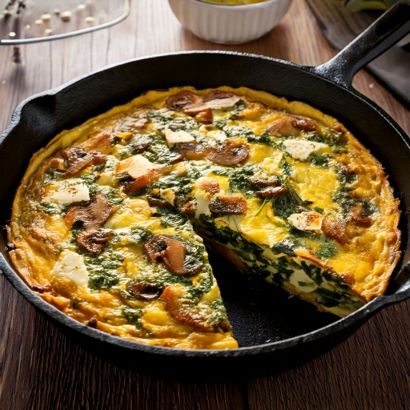

Baked egg frittata loaded with spinach, mushrooms, and feta — great for meal prep.
Nutrition (per serving)
252
Calories
5g
Carbs
16g
Protein
19g
Fat
1g
Fiber
~15
Est. GI
Why this fits a diabetes-friendly diet
At 5g of carbs per serving, it fits comfortably within most low-carb diabetes meal plans, and its estimated glycemic index of ~15 means the carbs it does have tend to digest slowly rather than spiking blood sugar fast, and 16g of protein per serving also helps slow digestion and blunt any post-meal rise.
Ingredients
- 4 large eggs
- 2 cup baby spinach
- 1 cup mushrooms
- 1/4 cup onion
- 1 tbsp olive oil
- 2 tbsp low-sodium feta cheese
- 1/4 tsp black pepper
Instructions
- Preheat oven to 375°F (190°C).
- Sauté onion and mushrooms in olive oil over medium heat for 4 minutes.
- Add spinach and cook until wilted.
- Whisk eggs with pepper and pour over vegetables in an oven-safe pan.
- Crumble feta on top.
- Bake 15–18 minutes until set. Slice and serve.
In GlucoBeacon
This recipe is one of 150+ in the GlucoBeacon Recipe Library, each with full nutrition breakdown, glycemic index estimate, and one-tap logging straight to your blood sugar history. Get notified when GlucoBeacon launches →